THE
UNITED STATES
California
Los Angeles
Pacific Coast Highway/W. Century Blvd

THE BARON: Long Ago and Far Away (Robert Asher: March 1966)
Establishing Los Angeles
Statler Hotel, Wilshire Boulevard, Los Angeles
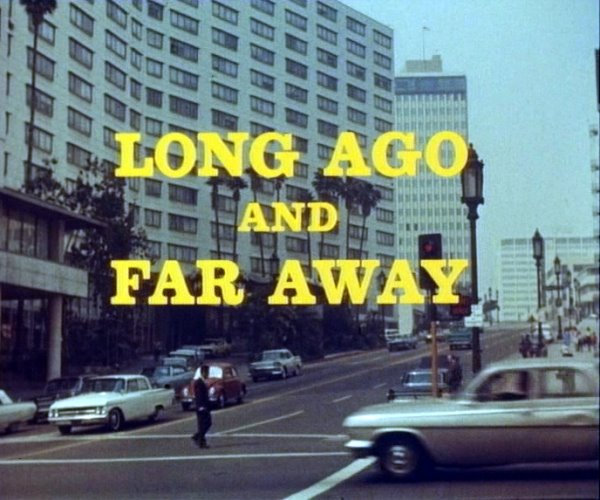
THE BARON: Long Ago and Far Away (Robert Asher: March 1966)
Establishing Los Angeles
Theme Building, Center Way, Los Angeles Airport

THE BARON: Long Ago and Far Away (Robert Asher: March 1966)
Establishing Los Angeles Airport
New York City
8th Avenue/W. 17th Street
DANGER MAN: The Affair At Castelevara (Quentin Lawrence: 1964)
Crowds gather to protest the imprisonment of Ramos Torres (footage from Labour Day march protests, 1950).
Brooklyn Bridge

THE SECRET SERVICE: A Question of Miracles (Ken Turner: Autumn 1968)
In New York the sale of 10 British desalination plants is being discussed.
(Spotted by Andrew Staton, June 2021)
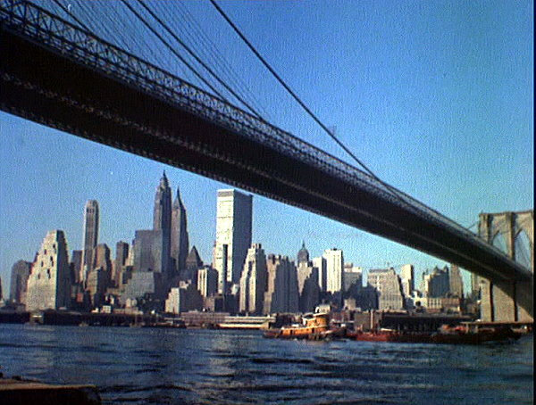
THE NEW AVENGERS: The Three Handed Game (Ray Austin: 1976)
In New York, a CIA agent feeds Helen McKay the information she will take to London.
John F. Kennedy Airport
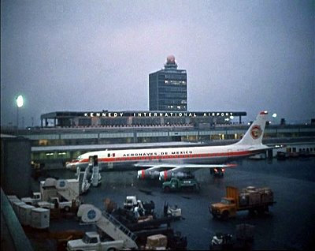
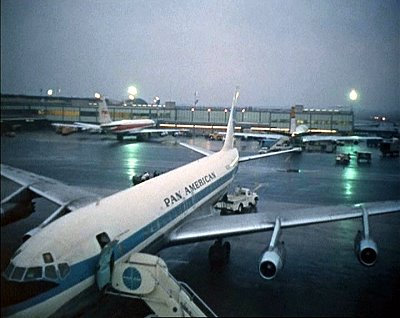
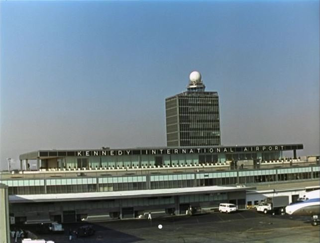
DEPARTMENT S: The Bones of Byrom Blain (Paul Dickson: 1968)
Stewart Sullivan flies out of New York with CIA agent Wilber Smith.
UFO: Confetti Check A-O.K. (David Lane: November 1969)
Ed Straker is sent to New York to make the case for funding S.H.A.D.O.
Manhattan Island
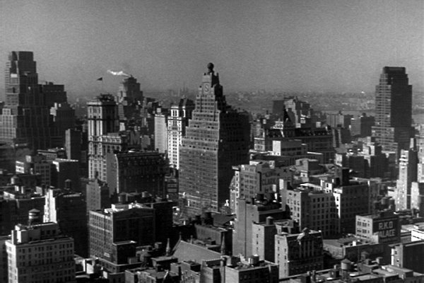
DANGER MAN: Position of Trust (Ralph Smart: 1959)
Opening shot of Manhattan (the building in the centre is on 7th Ave/44th Street).
(Spotted by Paul Stroud, March 2012)
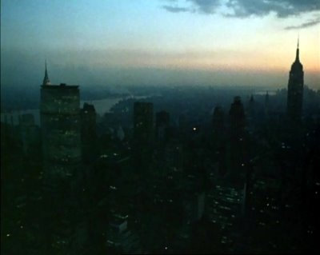
DEPARTMENT S: The Man From 'X' (Gil Taylor: February 1969)
Stewart is called to see Sir Curtis at the United Nations.
DEPARTMENT S: The Bones of Byrom Blain (Paul Dickson: 1968)
Stewart Sullivan flies to New York to intercept CIA agent Wilber Smith.
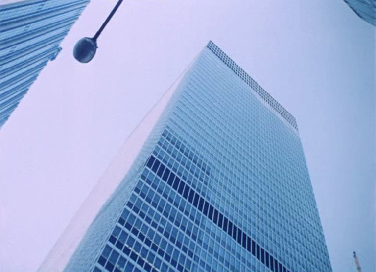
THE CHAMPIONS: The Invisible Man (Cyril Frankel: )
Richard goes to New York - establishing shot of skyscarper (1285 Avenue of the Americas)
Time Square
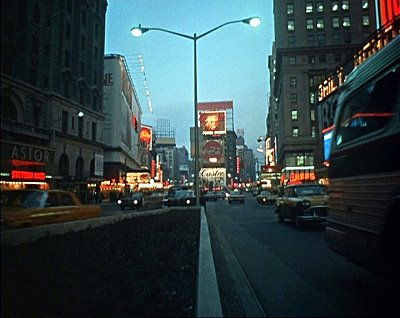
DEPARTMENT S: The Bones of Byrom Blain (Paul Dickson: 1968)
Stewart Sullivan flies to New York to intercept CIA agent Wilber Smith.
United Nations Headquarters, Manhattan
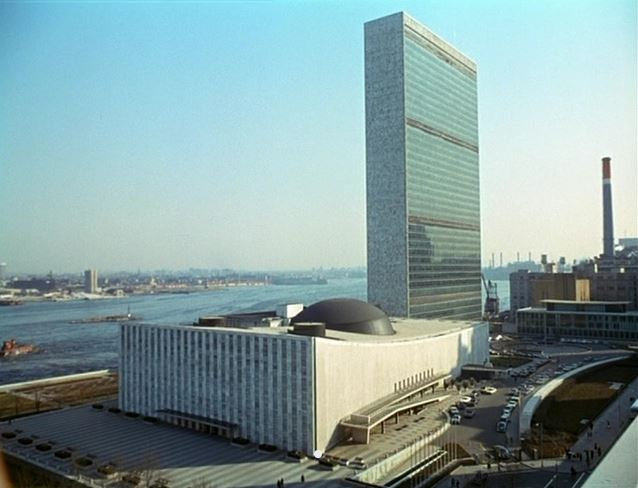
UFO: Confetti Check A-O.K. (David Lane: November 1969)
Ed Straker is sent to New York to make the case for funding S.H.A.D.O.
Florida
Cape Canaveral
Launch Complex 14

THE AVENGERS: Bizarre (Leslie Norman: February 1969)
Steed has built a rocket (an Atlas SLV-3) from a kit in his backyard which is launched accidentally by Tara while she and Steed are still aboard.
Miami
Bayfront, seen across Biscayne Bay, Miaimi, Florida, USA
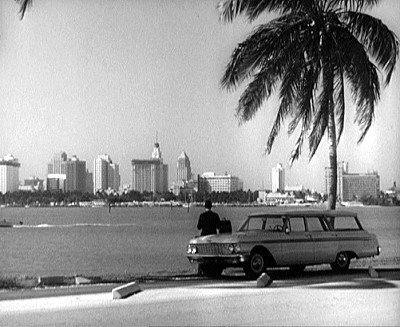
THE SAINT: The Effete Angler (Anthony Bushell: 1962)
Establishing shot of Miami, where Simon is propping up a hotel bar (The Evergaldes Hotel, which stood at 253 Northeast 2nd Street, is seen left of centre in the image).
(Identified by Sietse Postma, May 2022)
2399 Collins Avenue Miami Beach
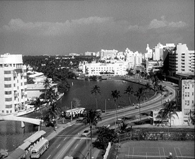
THE SAINT: The Effete Angler (Anthony Bushell: 1962)
Establishing shot of Miami Beach (the Helen Mar Building, is still standing as is the footbridge which leads across to Lake Pancoast Drive)
(Identified by Geoff Dodd, December 2013)
Miami International Airport

THE CHAMPIONS: The Gun Runners (Robert Asher: February 1967)
Craig's plane taxis and docks at Rangoon Airport.
RANDALL AND HOPKIRK [DECEASED]: The Ghost Who Saved the Bank at Monte Carlo (Jeremy Summers: June 1969)
Miami International Airport, Miami, Florida, United States of America - The aeroplane carrying Jeff, Jean and Marty's Aunt Clara to Monte Carlo arrives in France.
Sherry Frontenac Hotel, 6565 Collins Avenue
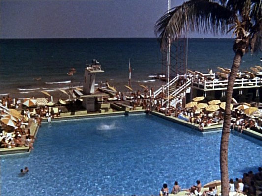
DEPARTMENT S: Blackout (Ray Austin: September 1968)
Stewart Sullivan Jason King and Annabelle Hurst travel to The Bahamas looking on the trail of Peter Sinclair.
Navada
Las Vegas

DEPARTMENT S: Black Out (Ray Austin: September 1968)
Stewart Sullivan Jason King and Annabelle Hurst travel to The Bahamas on the trail of Peter Sinclair (Hotel Sahara).
Hawaii
Honolulu
Waikiki Beach
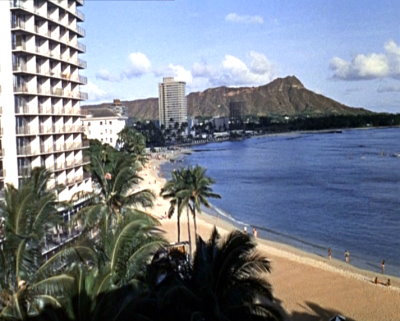
DEPARTMENT S: Death on Reflection (Ray Austin: 1968)
Jason King is on a Pacific island doing research.
Maui
Hāna Bay
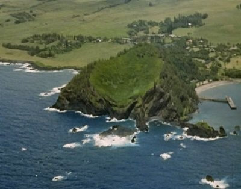
THE CHAMPIONS: The Ghost Plane (John Gilling: July 1967)
???
Washington
Seattle-Tacoma International Airport

DANGER MAN: Fish on the Hook (Robert Day: March 1964)
Drake Flies into Egypt
(Identified by "Liffy 1M," subscriber to PPRuNe.org, alerted by Goldox)
Film: DR. NO (1962)
(Identified by "Liffy 1M," subscriber to PPRuNe.org, alerted by Goldox)
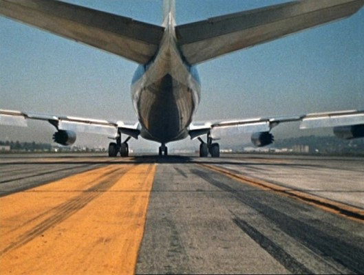
DEPARTMENT S: Six Days (Cyril Frankel: 1968)
Stewart Sullivan takes Golf-Alpha-Zulu-Echo-Bravo for a test flight, the 707 taxis on the runway before taking off.
King County International Airport, Seattle
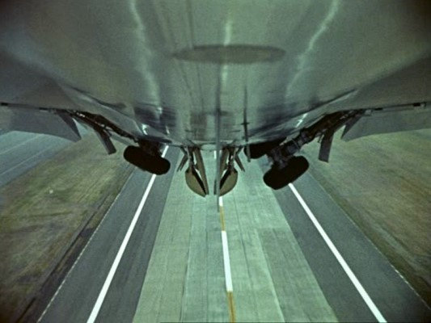
DEPARTMENT S: Six Days (Cyril Frankel: 1968)
Stewart Sullivan takes Golf-Alpha-Zulu-Echo-Bravo for a test flight.
Washington, D.C.
F Street NW/13th Street NW
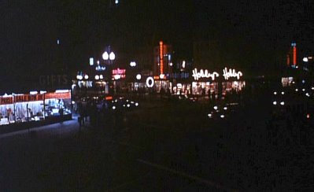
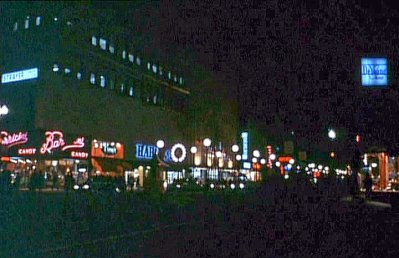
THE CHAMPIONS: Reply Box No. 666
The gang meet in the Kingston gift shop at night to discuss the future of the Russian cell.
(Identified by Sietse Postma, July 2023)
DEPARTMENT S: Black Out (Ray Austin: September 1968)
Wolfe and Stewart Sullivan are both driving through Nassau to get to Strober, the club manager.
(Identified by Sietse Postma, July 2023)
The White House
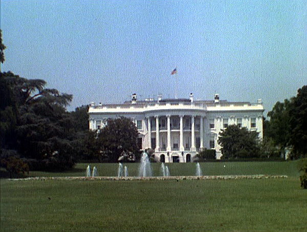
THE NEW AVENGERS: The Three Handed Game (Ray Austin: 1976)
At the White House, a CIA agent feeds Tony Fields the information he will take to London.
Return to Index